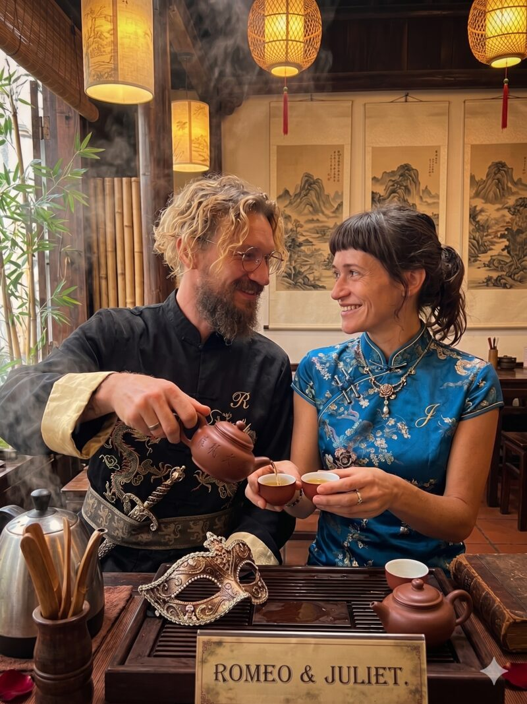

Water wakes. Leaf unfolds. Somewhere between the first pour and the last, the afternoon lets go of its hurry — and so do you.
We keep a small table in Hoi An, lantern-lit, where the kettle is the only clock. You sit; we pour. Aged pu-erh that tastes of wet cedar and old libraries, oolong that turns floral on the fourth steeping, a red tea like honey held up to a window. The same leaf, again and again, telling a slightly different story each time it meets the water.
Nothing here is a performance. There is no script to follow, no etiquette to fail. Only warm porcelain in your hands, the smell of steam on wood, a conversation that slows to the pace of the pouring — and the quiet, faintly surprising discovery that an hour spent doing almost nothing can be the fullest part of a day.
Come as two, come as six. Bring your questions about tea, or bring none at all. We will be here, kettle on, waiting for the water to sing.